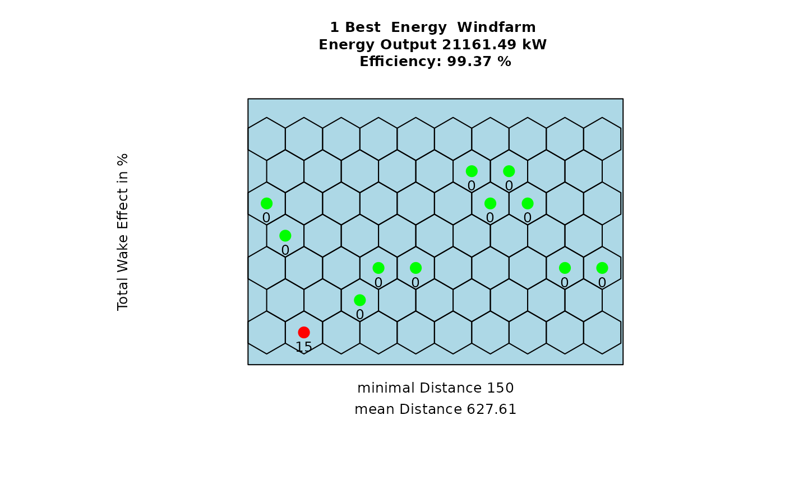

Plot the best solutions of the genetic algorithm.
Depending on plotEn, either the best energy or efficiency solutions
can be plotted. best indicates the amount of best solutions to plot.
plot_result(
result,
Polygon1,
best = 3,
plotEn = 1,
topographie = FALSE,
Grid = TRUE,
sourceCCLRoughness = NULL,
sourceCCL = NULL,
weibullsrc
)Arguments
- result
The output of
windfarmGAorgenetic_algorithm- Polygon1
The considered area as SpatialPolygon, SimpleFeature Polygon or coordinates as matrix/data.frame
- best
A numeric value indicating how many of the best individuals should be plotted
- plotEn
A numeric value that indicates if the best energy or efficiency output should be plotted.
1plots the best energy solutions and2plots the best efficiency solutions- topographie
A logical value, indicating whether terrain effects should be considered and plotted or not
- Grid
If
TRUE(default) the used grid will be added to the plot. You can also pass another Simple Feature object- sourceCCLRoughness
The source to the adapted Corine Land Cover legend as .csv file. Only required when terrain effect model is activated. As default a .csv file within this package (
~/extdata) is taken that was already adapted manually.- sourceCCL
The path to the Corine Land Cover raster (.tif). Only required when the terrain effect model is activated.
- weibullsrc
A list of Weibull parameter rasters, where the first list item must be the shape parameter raster `k` and the second item must be the scale parameter raster `a` of the Weibull distribution. If no list is given, then rasters included in the package are used instead, which currently only cover Austria. This variable is only used if
weibull = TRUE.
Value
Returns a data.frame of the best (energy/efficiency) individual during all iterations
See also
Other Plotting Functions:
interpol_view(),
plot_cloud(),
plot_development(),
plot_evolution(),
plot_fitness_evolution(),
plot_heatmap(),
plot_parkfitness(),
plot_viewshed(),
plot_windfarmGA(),
plot_windrose(),
random_search_single()
Examples
# \donttest{
## Add some data examples from the package
library(sf)
Polygon1 <- sf::st_as_sf(sf::st_sfc(
sf::st_polygon(list(cbind(
c(4498482, 4498482, 4499991, 4499991, 4498482),
c(2668272, 2669343, 2669343, 2668272, 2668272)))),
crs = 3035
))
## Plot the results of a hexagonal grid optimization
plot_result(resulthex, Polygon1, best = 1, plotEn = 1, topographie = FALSE)
#> N different optimal configurations: 7
#> Amount duplicates: 3
#> Plot 1 Best Energy Solution:

## Plot the results of a rectangular grid optimization
plot_result(resultrect, Polygon1, best = 1, plotEn = 1, topographie = FALSE)
#> N different optimal configurations: 108
#> Amount duplicates: 92
#> Plot 1 Best Energy Solution:
 # }
# }